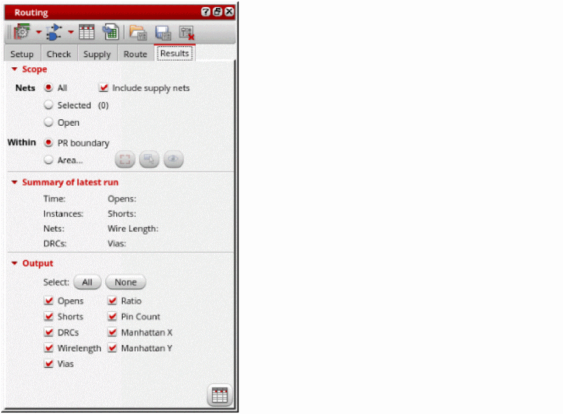

Viewing and Analyzing Standard Cell Routing Results
You can analyze the routing results using the Routing Results Browser. It shows the number of opens, shorts, wire length, DRC, vias, and so on.
To view and analyze the results:
-
Click the Results tab in the Routing Assistant.
 - Select the scope of nets to analyze the routing result. You can either select All, Selected, or Open nets.
- Select Supply Nets to see the routing results of the power and ground nets.
-
Select All to display all the output columns in the Routing Results Browser.
You can also select specific outputs for which you want the columns to be displayed in the Routing Results Browser. -
Click Show results browser
at the bottom right corner.
The Routing Results Browser is displayed. Examine the spreadsheet and observe the wirelength, via count, and ratio (routed length and ideal length). The ratio can be calculated with MST, Steiner, or Spine ideal routes.
You can also see the total number of routed nets, opens, shorts and details of various violations.

Related Topics
Generating Width Spacing Patterns for Standard Cell Routing
Checking Layout Routability after Running Standard Cell Placer
Running Signal Routing for Standard Cells
Routing Assistant User Interface for Standard Cell
Return to top